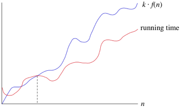

Что такое сложность по времени и зачем она нужна?


Рассмотрим простую реализацию линейного поиска:
var doLinearSearch = function(array, targetValue) {
for (var guess = 0; guess < array.length; guess++) {
if (array[guess] === targetValue) {
return guess; // найдено!
}
}
return -1; // не найдено
};
Обозначим размер массива (array.length) как n. Максимальное количество выполнений цикла for — n, и этот худший случай происходит, когда искомое значение отсутствует в массиве.
На каждой итерации цикла выполняются следующие действия:
- сравнение guess с array.length
- сравнение array[guess] с targetValue
- возможный возврат значения guess
- увеличение guess на 1
Каждое из этих действий требует постоянного времени. Следовательно, если цикл выполняется n раз, общее время будет c1*n, где c1 — сумма времён выполнения всех действий в одной итерации. Точное значение c1 зависит от скорости компьютера, языка программирования, компилятора или интерпретатора и других факторов.
Дополнительно есть небольшие накладные расходы на установку цикла for (например, инициализация guess = 0) и возможный возврат -1 в конце. Назовем это время c2, оно также константно. Таким образом, общее время в худшем случае: c1*n + c2.
Однако константы c1 и c2 не влияют на темп роста времени выполнения. Самое важное, что время работы линейного поиска в худшем случае растет пропорционально размеру массива n. Мы записываем это как Θ(n).
Если говорим, что время выполнения равно Θ(n), это означает, что для достаточно больших n время выполнения находится между k1*n и k2*n для некоторых констант k1 и k2.

Для малых значений n это неважно, но начиная с определенного момента — время должно находиться между этими двумя границами.
Можно использовать и другие функции вместо n в обозначении Θ, например, n², n log n и так далее.

При этом мы отбрасываем константные множители и слагаемые низших порядков.
Использование большого-Θ означает, что мы нашли асимптотически точную границу времени выполнения.
Иногда нам нужно только ограничение сверху. Например, хотя худшее время работы бинарного поиска — это Θ(log₂n), в лучшем случае (при первой попытке) он работает за Θ(1).
Поэтому вводится обозначение Большое-O для указания только верхней границы роста времени выполнения.
Если время выполнения — O(f(n)), значит, для больших n оно не превышает k*f(n) для некоторой константы k.

Используем Большое-O для указания асимптотической верхней границы.
Например, бинарный поиск всегда выполняется за O(log₂n).
Но стоит помнить: если мы говорим O(f(n)), это менее строго, чем Θ(f(n)).
Интересный момент: мы можем технически сказать, что бинарный поиск работает за O(n) — это правда, но очень неточно (ведь реальное время меньше).
Это как сказать: "У меня в кармане сумма, не превышающая миллион долларов", даже если у вас всего 10 долларов.
Иногда нам нужно сказать, что алгоритм занимает не менее определенного времени — без указания верхней границы. Для этого используют обозначение Большое-Ω.
Если время выполнения — Ω(f(n)), это значит, что для больших n оно будет как минимум k*f(n) для некоторой константы k.

Большое-Ω используется для указания асимптотической нижней границы.
Например, худшее время бинарного поиска можно описать как Ω(log₂n).
Также можно корректно, но неточно сказать, что бинарный поиск занимает не менее Ω(1) времени (константное время).
Обычно стараются указывать максимально точные оценки сложности, но понимание всех обозначений (Θ, O, Ω) важно для правильного описания алгоритмов.